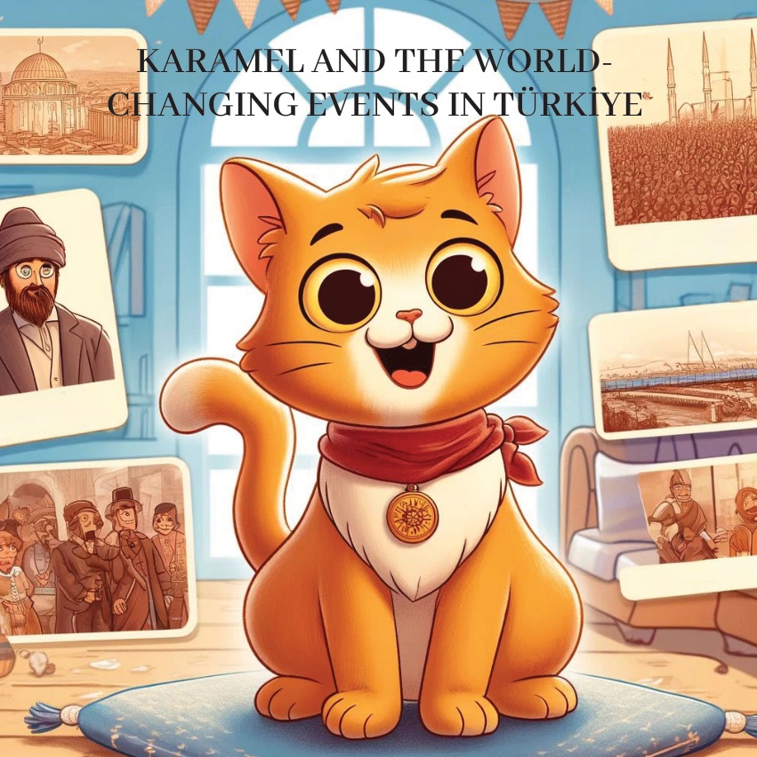
1
2

3
کرمیل، ایک کنجوس اور цікаی بلی تھی، کو دنیا کے اہم واقعات کے بارے میں கதைகள் سننا بہت پسند تھا۔ ایک دن، اسے ترکی کے اہم تاریخی واقعات کو نشان زد کرنے والا ایک نقشہ ملا۔ خوش ہو کر، وہ ان اہم لمحوں کے بارے میں جاننے کے لیے ایک ایڈونچر پر نکلی۔
4
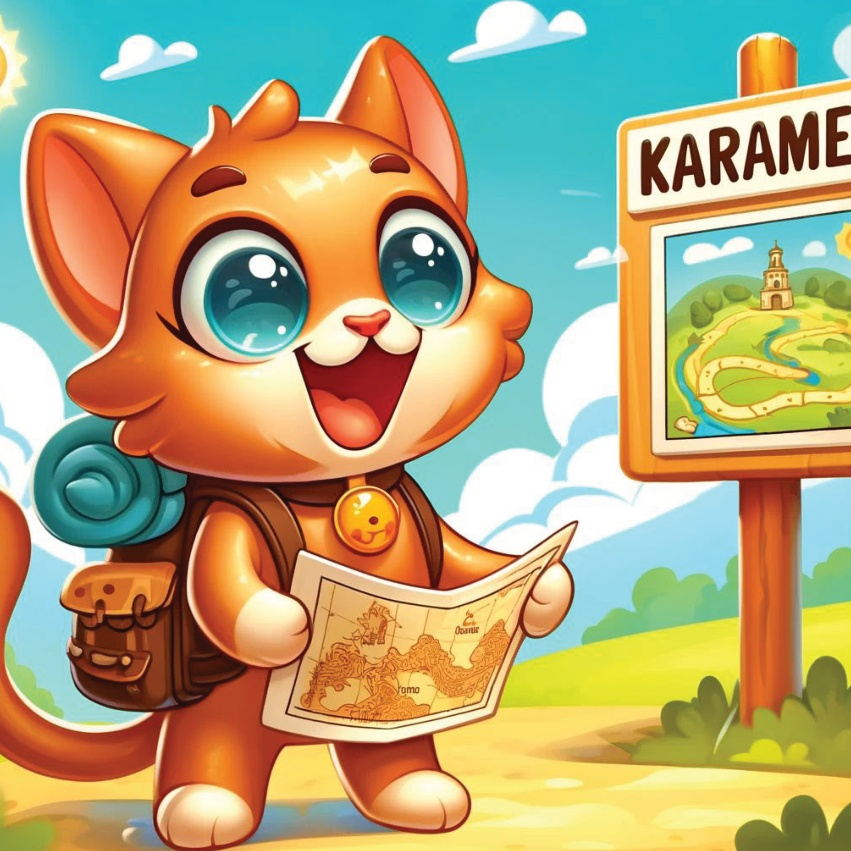
5
مرمرة علاقہ – اسطنبول پر فتح.
کارملی کی پہلی منزل اسطنبول تھی۔ یہاں اس نے ١٤٥٣ میں اس شہر پر فتح کے بارے میں جانا۔ اس نے دریافت کیا کہ یہ واقعہ تاریخ کو کیسے تبدیل کرتا ہے اور آج ہم جو دنیا جانتے ہیں اسے کیسے بناتا ہے۔
6
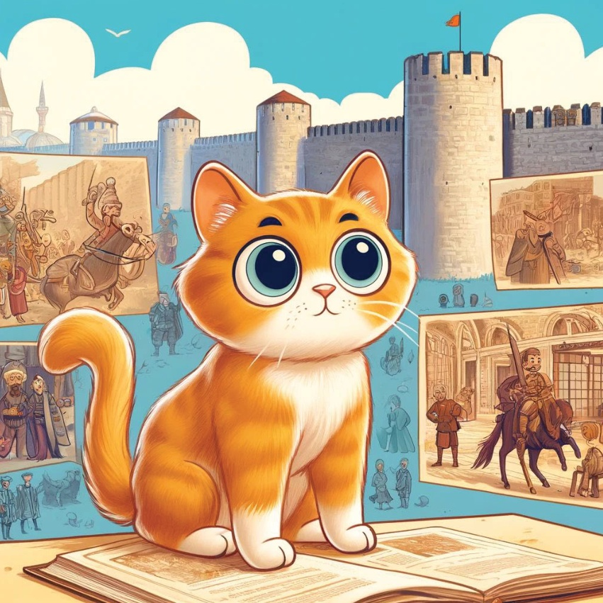
7
Aegean Bölgesi – İzmir Ekonomik Kongresi (1923).
Sonra Karamel İzmir'e gitti ve 1923 İzmir Ekonomik Kongresi hakkında bilgi aldı. O öğrendi ki bu etkinlik yeni Türkiye Cumhuriyeti'nin ekonomik geleceğini şekillendirmesine yardımcı oldu.
8
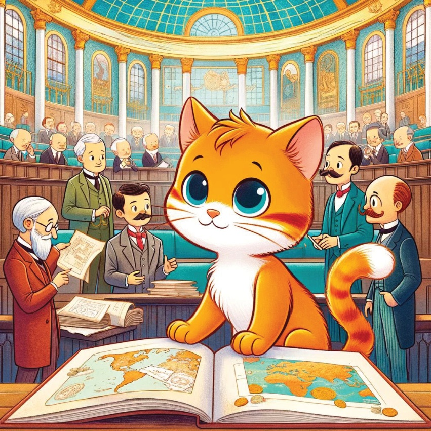
9
## Aspendos Tiyatrosunda Kültürler Arası Değişimler.
Karamel, Aspendos'ta antik tiyatronun içinde geçmiş zamanlarda nasıl güzel olaylar yaşandığını öğrendi. .
Aspendos çok eski bir yerdir ve burada insanlar birçok farklı kültürden gelip bir araya gelmişlerdir. Tiyatro, insanların eğlenmek için geldiği, oyunların oynandığı ve önemli toplantıların yapıldığı bir yerdi..
Bu tiyatroda çok sayıda gösteri düzenlenmiştir. İnsanlar şarkılar söylemiş, dans etmiş ve hikayeler anlatmışlardır. Bu gösteriler, bölgenin kültürel gelişimine çok büyük katkı sağlamıştır. Farklı kültürlerden gelen insanlar birbirlerinden yeni şeyler öğrenmişler ve bu sayede birlikte daha güzel bir toplum oluşturmuşlardır..
Karamel, tiyatronun bu tarihi olayları dinlerken çok heyecanlandı. Geçmişte insanların nasıl bir araya geldiğini ve birlikte nasıl eğlendiklerini hayal etti. Aspendos tiyatrosu, farklı kültürlerin birleştiği ve güzel anılar biriktirdiği önemli bir yerdir.
10
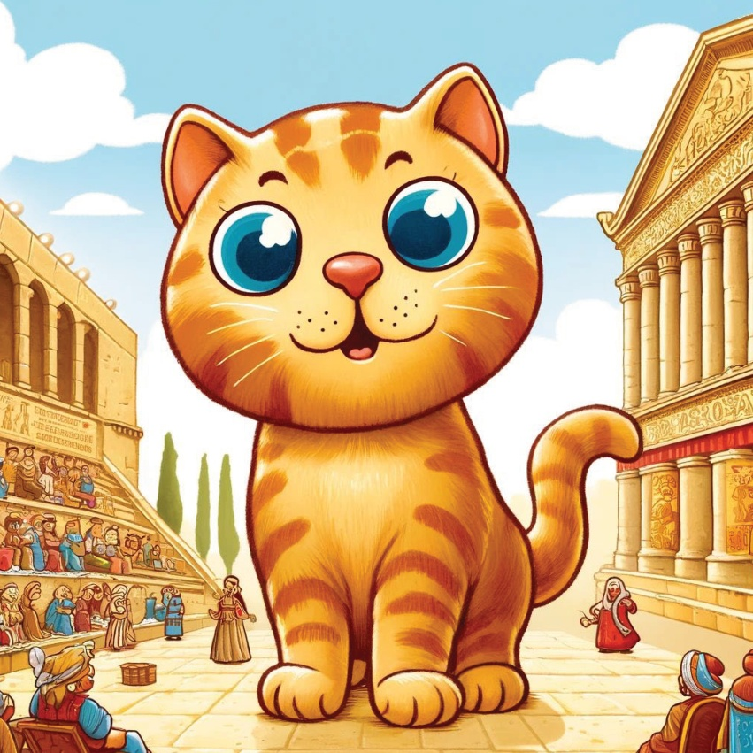
11
Ankara Başkent Oldu (1923).
Karamel Ankara'ya gitti ve orada öğrendi ki Ankara, 1923 yılında Türkiye'nin başkenti seçilmişti. O öğrendi ki bu karar, ülkenin gelişmesine çok büyük etki yaptı.
12
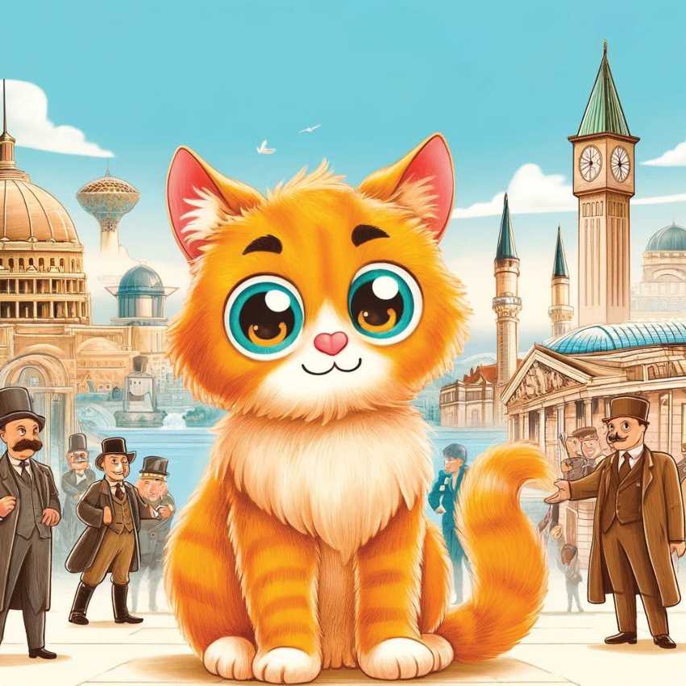
13
Karadeniz Bölgesi – Trabzon’un Tarihi Liman Şehri Olarak Rolü.
Trabzon’da Karamel, şehrin tarihi bir liman şehri olmasının önemini öğrendi. O, Trabzon’un stratejik konumunun ticaret ve kültürel alışverişleri nasıl etkilediğini anladı.
14
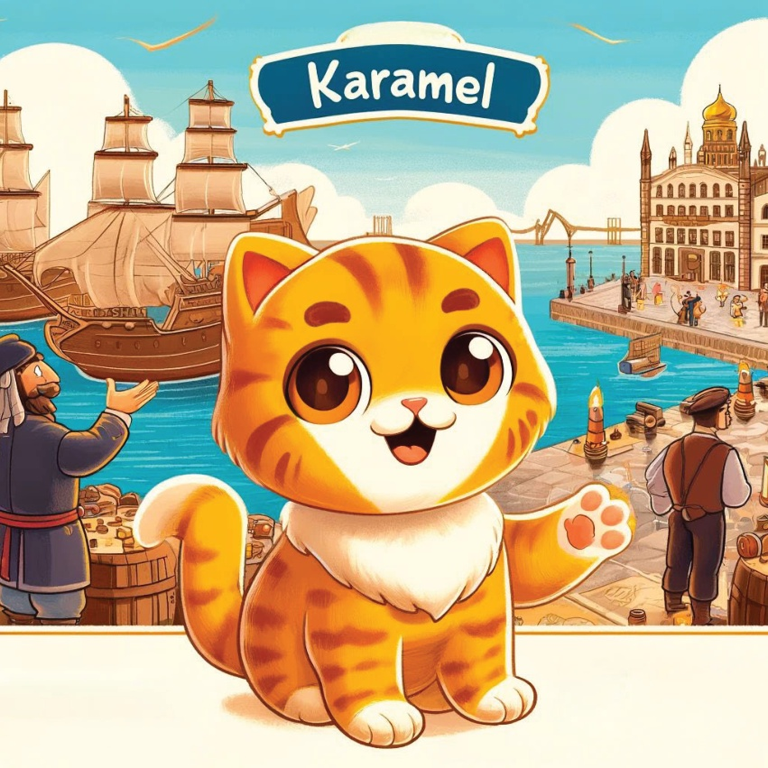
15
Doğu Anadolu Bölgesi – Manzikert Savaşı (1071).
Karamel Manzikert Savaşı’nın yerini ziyaret etti. Orada, 1071 yılında yaşanan bu çok önemli olay hakkında bilgi aldı. Bu savaş, Anadolu’nun Selçuklulara açılmesine neden oldu.
16
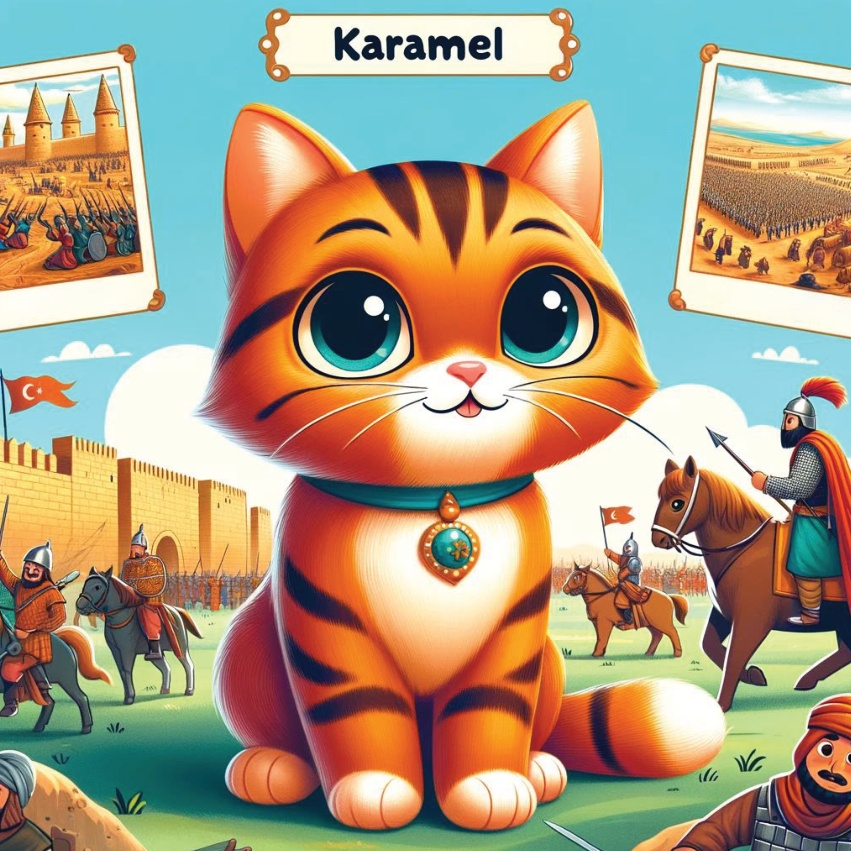
17
Güneydoğu Anadolu Bölgesi – Göbekli Tepe Keşfi.
Karamel’in son durak Göbekli Tepe oldu. Burada o, bu eski yerin nasıl keşfedildiğini ve bunun ilk insanlar hakkında nasıl önemli bilgiler verdiğini öğrendi.
18
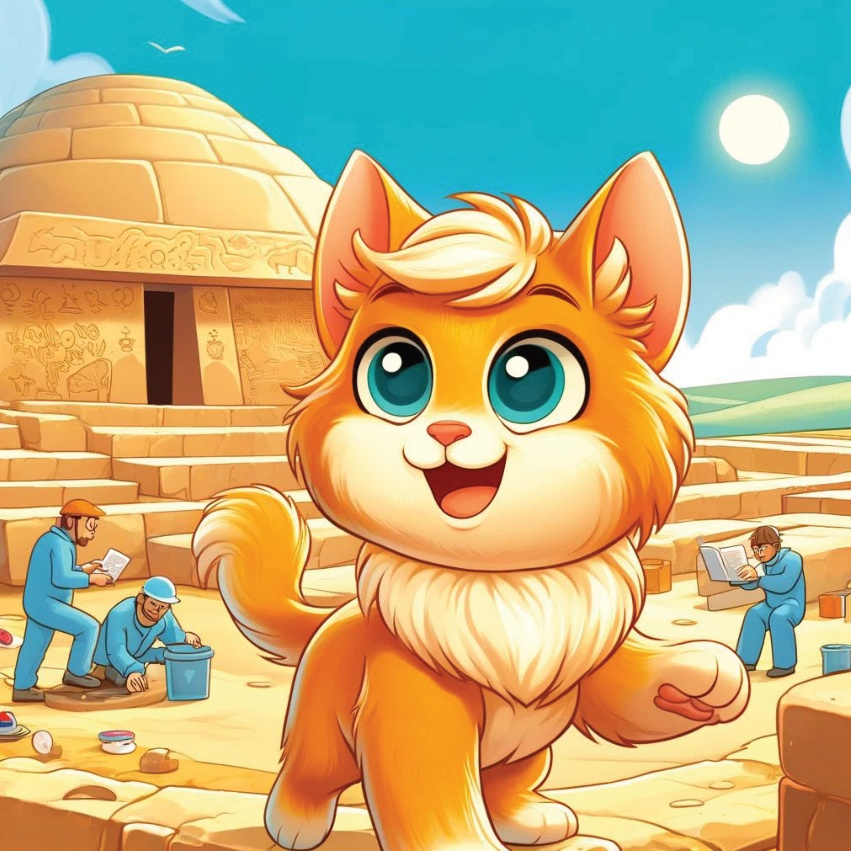
19
Karamel اپنے دل میں حیرت اور اپنے ذہن میں اہم تاریخی واقعات لے کر اپنے گھر واپس آئی۔ وہ اپنی آنے والی نئی کہکشاں کا خواب دیکھ رہی تھی۔ اس نے محسوس کیا کہ ترکی کا سچا खजाना اس کی غنی تاریخ اور ان اہم واقعات میں پایا جاتا ہے جنہوں نے دنیا کوramienta۔
20
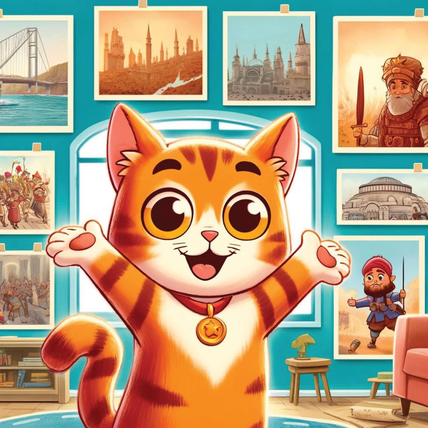
21
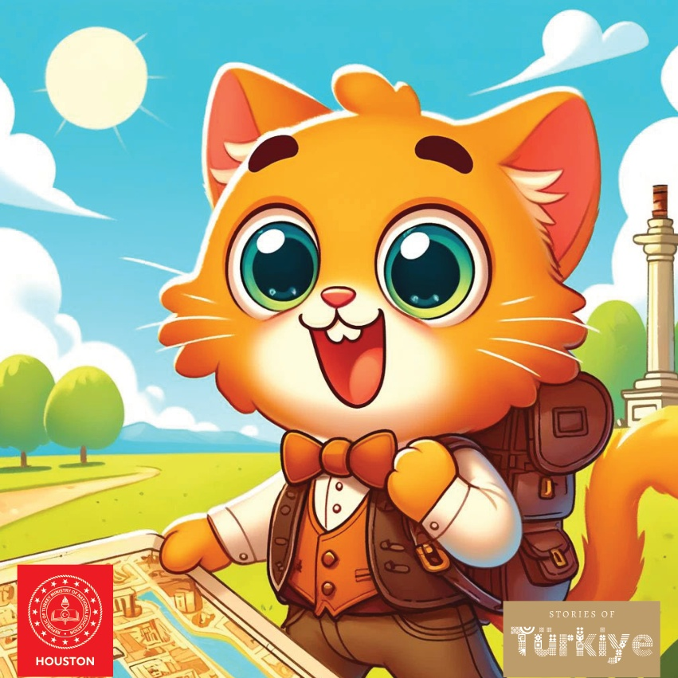
22